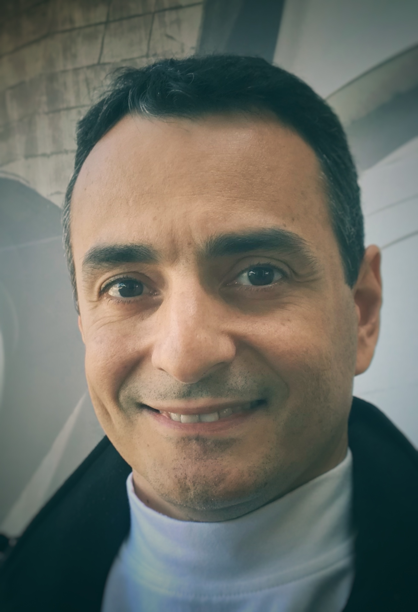

Charles Casimiro Cavalcante
Associate Professor
Department of Teleinformatics Engineering
Federal University of Ceará (UFC)
Fortaleza, Ceará, Brazil
Email: charles.casimiro@ieee.org
Homepage: http://charlescasimiro.github.io/
Phone: +55 85 3366 9470 (ext. 1002)
I am currently an Associate Professor with the Department of Teleinformatics Engineering of the Federal University of Ceará (UFC), Brazil. I received the Electrical Engineering and M.Sc. degrees from Federal University of Ceará in 1999 and 2001, respectively and the PhD degree from the University of Campinas, Brazil in 2004. From 2004-2008 I was a CNPq Scholar and a Visiting Professor at Federal University of Ceará. From August 2014 to July 2015, I was a Visiting Assistant Professor in the Department of Computer Science and Electrical Engineering (CSEE) of University of Maryland Baltimore County (UMBC), joining the Machine Learning for Signal Processing Lab (MLSP).
My current research interests include signal processing for wireless communications, information geometry and statistical signal processing.
I am an IEEE Senior Member and also a Senior Member of Brazilian Telecommunications Society (SBrT). I am currently serving as an Associate Editor of IET Signal Processing and also serving as the IEEE Signal Processing Society Regional Director-at-Large (RDAL) for Regions 7 & 9 for the term of 2020-2021. He is a research fellow of the CNPq (the Brazilian National Council for Scientific and Technological Development). I have served as the co-Editor-in-Chief of the Journal of Communication and Information Systems (JCIS) in the term 2014-2018. I am actually serving as the Deputy Head for Professional Programs on the Area of Engineering IV at CAPES on the term 2018-2022.
I served the Brazilian Telecommunications Society (SBrT) as President in the term 2018-2020, Vice-President of External Relationships in the term 2016-2018, Vice-President of Development and Diffusion in the term 2012-2014 and Vice-President of Finance in the term 2010-2012. I was also the general chair of the Brazilian Telecommunications and Signal Processing Symposium (SBrT 2013) at Fortaleza, Ceará and served as a technical committee member and reviewer for several flagship signal processing and communications conferences such as (e.g. IEEE SPAWC, IEEE ICASSP, EUSIPCO, IEEE VTC, IEEE WCNC, ISWCS).
Vitae and CV Lattes (in Portuguese).
Education
- D.Sc. Degree: Electrical Engineering, University of Campinas (UNICAMP), Brazil, 2004.
- M.Sc. Degree: Electrical Engineering, Federal University of Ceará (UFC), Brazil, 2001;
- B.S Degree: Electrical Engineering, Federal University of Ceará (UFC), Brazil, 1999;
Ph.D. Thesis Title
On Blind Source Separation: Proposals and Analysis of Strategies for Multiuser Processing (in Portuguese)
Master Thesis Title
Neural Prediction and Probability Density Function Estimation Applied to Blind Equalization (in Portuguese)
Other info
- Researcher of GTEL (Wireless Telecommunications Research Group - UFC)
- Collaborator of Machine Learning for Signal Processing (MLSP) Laboratory at University of Maryland Baltimore County (UMBC)
- Associate member of DSPCom Laboratory (Digital Signal Processing for Communications Lab.- UNICAMP)
Contact
Mail address:Wireless Telecommunications Research Group (GTEL)
Universidade Federal do Ceará (UFC)
Campus do Pici, C.P. 3225, Bloco 722
Fortaleza - CE, Brazil
CEP: 60.416-200